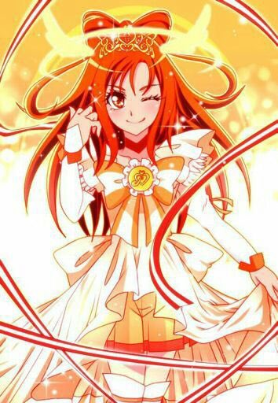

Hello and Welcome
Today we will be talk about the Glitter Force.
Im going to show you 7 characters from the cartoon and their. powers.
So lets Get Started!
1. Emily
Emily, also known as Glitter Lucky, is the main character
in Glitter Force and also the leader of the Glitter Force.Emily is a happy-go-lucky
young girl who can be very cute. She has an obsession with fairy tales and is determined
to lead her family, friends, and the world towards a happy ending.
More Info About Emily.
2. Kelsey

Kelsey, also known as Glitter Sunny, is one of the
main characters in Glitter Force.Kelsey is a feisty, competitive and passionate middle
school girl. Despite her playful teasing and light-hearted demeanor, she can also get
very serious and determined about her favorite sport, volleyball.
More About Kelsey.
3. Lily
Lily, also known as Glitter Peace, is a main character in Glitter Force.Lily is the
most sensitive and artistic of the Glitter Force. She cares for her friends and everyone
around her, but she also has some insecurity with who she is, how she socializes and
her creativity.
More About lily
4. April
April, also known by her alter ego,
Glitter Spring, is one of the main characters in
Glitter Force. April is a straightforward and strong girl.
She loves her family and friends very much and
likes to compete with Kelsey.
more about April
5. Chloe
Chloe, also known as Glitter Breeze, is one of
the main characters in Glitter Force.As the student council president, Chloe is a calm,
mature, and kind young girl, who is at the top of her class. She doesn’t always know
what she wants to do in the future, so she often focuses on her family and friends.
more about chloe
6. Brooha
Brooha is A petite and elderly witch who usually wears dark green clothes, and is
modeled after fairy tale witches such as those found in Hansel and Gretel
and Snow White.
more about brooha
7. Rascal

Rascal is the secondary bad guy of Glitter Force & highest-ranking commander
of Nogo. He has a clown-like appearance, and tends to playfully break out in
acrobatics, and has a bouncy but sadistic personality.
more about Rascal
Thank you all for your time.
<
|
|
 |
 |
|